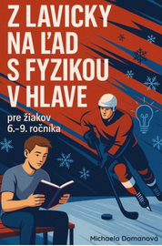

FYZIKA NA ĽADE
Fyzika nemusí byť iba v zošite. V hokeji ju vidíš pri každej prihrávke, strele a zmene smeru.
UČENIE Z HRY

Ide o špecializovanú učebnicu fyziky určenú pre žiakov 6. až 9. ročníka, ktorí žijú hokejom a chcú lepšie porozumieť svetu, ktorý ich na ľade obklopuje. Namiesto abstraktných príkladov prináša reálne herné situácie, tréningové cvičenia a hokejové scenáre, vďaka ktorým sa aj zložité fyzikálne zákony stávajú zrozumiteľné a názorné.
Každá lekcia využíva svet hokeja ako most medzi teóriou a praxou. Žiaci tak môžu ľahšie pochopiť pojmy ako sila, trenie a rýchlosť prostredníctvom situácií, ktoré dobre poznajú – napríklad pri prudkej strele z prvej, rýchlej zmene smeru alebo ostrom zabrzdení na ľade.
Tento prístup prirodzene prepája kvalitné vzdelávanie s vášňou pre šport. Žiaci sa tak neučia fyziku len ako súbor vzorcov a definícií, ale rozumejú jej priamo v kontexte hry, ktorú milujú. Fyziku si osvojujú s rovnakým nasadením, disciplínou a odhodlaním, aké prináša výkon profesionálneho športovca.